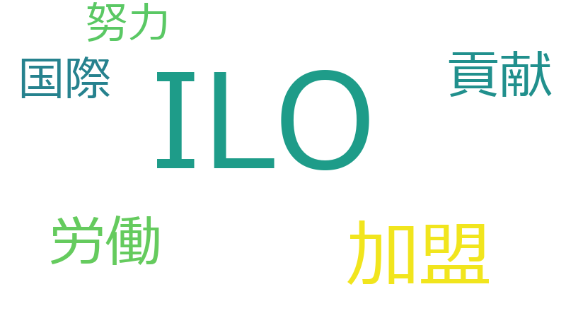

川崎二郎

ILO、加盟、努力、労働、国際、貢献、世界、創設、批准、機関、目標、周年、国際社会、基本、基本的、委員会、委員長、審査、役割、条約、権利、決議、理念、議長、起立、ディーセント・ワーク、一任、主義、仕事、付託、代表、働き方、八つ、公正、公職選挙法、労働基準、協力、原則、国内、国内外、国連、国際的、地方自治法、履行、意見書、採択、政治資金規正法、本、案、森山、構成、浩行、申、請願、達成、陳情書、SDGs、さ、その他、オンライン、クラブ、グローバル化、サミット、スケール、スピード、リード、一種、一翼、一言、九条、了承、互選、亮、人選、以来、佐藤、使、使命、使用者、保留、信、信頼、健全、傾注、働きがい、公報、公明党、円満、前文、剛士、労働者、動議、参考人、参議院、取扱い、合、向上、唯一、四つ、国々
ILO
2019-06-26 account_balance
…民会議、社会民主党・市民連合、希望の党及び未来日本を代表いたしまして、ただいま議題となりました国際労働機関（ＩＬＯ）創設百周年に当たり、ＩＬＯに対する我が国の一層の貢献に関する決議案につきまして、提案の趣旨を御説明申し上…
…、希望の党及び未来日本を代表いたしまして、ただいま議題となりました国際労働機関（ＩＬＯ）創設百周年に当たり、ＩＬＯに対する我が国の一層の貢献に関する決議案につきまして、提案の趣旨を御説明申し上げます。（拍手）案文の朗読…
…説明申し上げます。（拍手）案文の朗読をもちまして趣旨の説明にかえさせていただきます。国際労働機関（ＩＬＯ）創設百周年に当たり、ＩＬＯに対する我が国の一層の貢献に関する決議案本年、国際労働機関（ＩＬＯ）は記念…
…案文の朗読をもちまして趣旨の説明にかえさせていただきます。国際労働機関（ＩＬＯ）創設百周年に当たり、ＩＬＯに対する我が国の一層の貢献に関する決議案本年、国際労働機関（ＩＬＯ）は記念すべき創設百周年を迎えた。…
…労働機関（ＩＬＯ）創設百周年に当たり、ＩＬＯに対する我が国の一層の貢献に関する決議案本年、国際労働機関（ＩＬＯ）は記念すべき創設百周年を迎えた。第一次世界大戦終了後の千九百十九年に創設されたＩＬＯは、憲章前文に掲…
…年、国際労働機関（ＩＬＯ）は記念すべき創設百周年を迎えた。第一次世界大戦終了後の千九百十九年に創設されたＩＬＯは、憲章前文に掲げる「世界の永続する平和は、社会正義を基礎としてのみ確立することができる」との普遍的理念の…
…ことに関わる基本的権利の確立に尽力し、着実にその歴史を刻んできた。現在では世界百八十七もの国々が加盟するＩＬＯは、国連機関としては唯一、加盟国の政府、労働者及び使用者の三者代表によって意思決定と組織の運営が行われてお…
…れており、我が国を含め、加盟国内における三者構成主義の確立に大きな役割を果たしてきたことは特筆に値する。ＩＬＯの原加盟国の一つであり、千九百五十四年以来常任理事国の地位を占めている我が国も、長年にわたってＩＬＯの重要…
…る。ＩＬＯの原加盟国の一つであり、千九百五十四年以来常任理事国の地位を占めている我が国も、長年にわたってＩＬＯの重要な一翼を担い、国内外でＩＬＯ活動の推進を積極的に牽引してきたところであり、国際社会からは今後のさらな…
…り、千九百五十四年以来常任理事国の地位を占めている我が国も、長年にわたってＩＬＯの重要な一翼を担い、国内外でＩＬＯ活動の推進を積極的に牽引してきたところであり、国際社会からは今後のさらなる貢献が強く期待されている。千…
…のさらなる貢献が強く期待されている。千九百九十八年に採択された「労働における基本的な原則及び権利に関するＩＬＯ宣言」では、加盟国が尊重・遵守すべき四つの基本的権利に関する原則が定められ、それに対応する八つの基本条約に…
…一層その規模とスピードを増し、「働き方」の多様化や国内外の人の移動もスケールと複雑さを増していく。その中で、ＩＬＯの基本理念や国際労働基準、三者構成主義やディーセント・ワーク目標が果たすべき役割がますます大きくなることに…
…成主義やディーセント・ワーク目標が果たすべき役割がますます大きくなることに鑑み、ここに本院は、改めて我が国がＩＬＯにおいて果たすべき役割と責務の重要性を確認し、ＩＬＯの次なる百年の発展と活動の展開に向け、これからも世界の…
…すます大きくなることに鑑み、ここに本院は、改めて我が国がＩＬＯにおいて果たすべき役割と責務の重要性を確認し、ＩＬＯの次なる百年の発展と活動の展開に向け、これからも世界の加盟国と共にその理念の追求と実現のために最大限の貢献…
加盟
2019-06-26 account_balance
…上、働くことに関わる基本的権利の確立に尽力し、着実にその歴史を刻んできた。現在では世界百八十七もの国々が加盟するＩＬＯは、国連機関としては唯一、加盟国の政府、労働者及び使用者の三者代表によって意思決定と組織の運営が行…
…力し、着実にその歴史を刻んできた。現在では世界百八十七もの国々が加盟するＩＬＯは、国連機関としては唯一、加盟国の政府、労働者及び使用者の三者代表によって意思決定と組織の運営が行われており、我が国を含め、加盟国内におけ…
…ては唯一、加盟国の政府、労働者及び使用者の三者代表によって意思決定と組織の運営が行われており、我が国を含め、加盟国内における三者構成主義の確立に大きな役割を果たしてきたことは特筆に値する。ＩＬＯの原加盟国の一つであり…
…我が国を含め、加盟国内における三者構成主義の確立に大きな役割を果たしてきたことは特筆に値する。ＩＬＯの原加盟国の一つであり、千九百五十四年以来常任理事国の地位を占めている我が国も、長年にわたってＩＬＯの重要な一翼を担…
…く期待されている。千九百九十八年に採択された「労働における基本的な原則及び権利に関するＩＬＯ宣言」では、加盟国が尊重・遵守すべき四つの基本的権利に関する原則が定められ、それに対応する八つの基本条約についてその批准と履…
…Ｏにおいて果たすべき役割と責務の重要性を確認し、ＩＬＯの次なる百年の発展と活動の展開に向け、これからも世界の加盟国と共にその理念の追求と実現のために最大限の貢献をしていく決意をここに表明する。右決議する。以上でありま…
労働
2019-06-26 account_balance
…立て直す国民会議、社会民主党・市民連合、希望の党及び未来日本を代表いたしまして、ただいま議題となりました国際労働機関（ＩＬＯ）創設百周年に当たり、ＩＬＯに対する我が国の一層の貢献に関する決議案につきまして、提案の趣旨を御…
…の趣旨を御説明申し上げます。（拍手）案文の朗読をもちまして趣旨の説明にかえさせていただきます。国際労働機関（ＩＬＯ）創設百周年に当たり、ＩＬＯに対する我が国の一層の貢献に関する決議案本年、国際労働機関（ＩＬ…
…国際労働機関（ＩＬＯ）創設百周年に当たり、ＩＬＯに対する我が国の一層の貢献に関する決議案本年、国際労働機関（ＩＬＯ）は記念すべき創設百周年を迎えた。第一次世界大戦終了後の千九百十九年に創設されたＩＬＯは、憲…
…章前文に掲げる「世界の永続する平和は、社会正義を基礎としてのみ確立することができる」との普遍的理念の下、国際労働基準の策定や開発協力などの活動を通じ、労働条件や雇用環境の改善と向上、働くことに関わる基本的権利の確立に尽力…
…正義を基礎としてのみ確立することができる」との普遍的理念の下、国際労働基準の策定や開発協力などの活動を通じ、労働条件や雇用環境の改善と向上、働くことに関わる基本的権利の確立に尽力し、着実にその歴史を刻んできた。現在で…
…の歴史を刻んできた。現在では世界百八十七もの国々が加盟するＩＬＯは、国連機関としては唯一、加盟国の政府、労働者及び使用者の三者代表によって意思決定と組織の運営が行われており、我が国を含め、加盟国内における三者構成主義…
…してきたところであり、国際社会からは今後のさらなる貢献が強く期待されている。千九百九十八年に採択された「労働における基本的な原則及び権利に関するＩＬＯ宣言」では、加盟国が尊重・遵守すべき四つの基本的権利に関する原則が…
…を増し、「働き方」の多様化や国内外の人の移動もスケールと複雑さを増していく。その中で、ＩＬＯの基本理念や国際労働基準、三者構成主義やディーセント・ワーク目標が果たすべき役割がますます大きくなることに鑑み、ここに本院は、改…
貢献
2019-06-26 account_balance
…いたしまして、ただいま議題となりました国際労働機関（ＩＬＯ）創設百周年に当たり、ＩＬＯに対する我が国の一層の貢献に関する決議案につきまして、提案の趣旨を御説明申し上げます。（拍手）案文の朗読をもちまして趣旨の説明にかえ…
…説明にかえさせていただきます。国際労働機関（ＩＬＯ）創設百周年に当たり、ＩＬＯに対する我が国の一層の貢献に関する決議案本年、国際労働機関（ＩＬＯ）は記念すべき創設百周年を迎えた。第一次世界大戦終了後の千九…
…の重要な一翼を担い、国内外でＩＬＯ活動の推進を積極的に牽引してきたところであり、国際社会からは今後のさらなる貢献が強く期待されている。千九百九十八年に採択された「労働における基本的な原則及び権利に関するＩＬＯ宣言」で…
…サミットで採択されたＳＤＧｓ（持続可能な開発目標）でも目標の一つに掲げられている。今後、国際的な達成努力への貢献はもとより、国内においても働き方改革の達成目標と位置付け、「仕事の未来」をも見据えて国際社会をリードする取組…
…ＩＬＯの次なる百年の発展と活動の展開に向け、これからも世界の加盟国と共にその理念の追求と実現のために最大限の貢献をしていく決意をここに表明する。右決議する。以上であります。何とぞ議員各位の御賛同をお願い申し上げます…
国際
2019-06-26 account_balance
…障を立て直す国民会議、社会民主党・市民連合、希望の党及び未来日本を代表いたしまして、ただいま議題となりました国際労働機関（ＩＬＯ）創設百周年に当たり、ＩＬＯに対する我が国の一層の貢献に関する決議案につきまして、提案の趣旨…
…提案の趣旨を御説明申し上げます。（拍手）案文の朗読をもちまして趣旨の説明にかえさせていただきます。国際労働機関（ＩＬＯ）創設百周年に当たり、ＩＬＯに対する我が国の一層の貢献に関する決議案本年、国際労働機関（…
…。国際労働機関（ＩＬＯ）創設百周年に当たり、ＩＬＯに対する我が国の一層の貢献に関する決議案本年、国際労働機関（ＩＬＯ）は記念すべき創設百周年を迎えた。第一次世界大戦終了後の千九百十九年に創設されたＩＬＯは…
…、憲章前文に掲げる「世界の永続する平和は、社会正義を基礎としてのみ確立することができる」との普遍的理念の下、国際労働基準の策定や開発協力などの活動を通じ、労働条件や雇用環境の改善と向上、働くことに関わる基本的権利の確立に…
…が国も、長年にわたってＩＬＯの重要な一翼を担い、国内外でＩＬＯ活動の推進を積極的に牽引してきたところであり、国際社会からは今後のさらなる貢献が強く期待されている。千九百九十八年に採択された「労働における基本的な原則及…
…遵守すべき四つの基本的権利に関する原則が定められ、それに対応する八つの基本条約についてその批准と履行に向けた国際的な努力が続けられてきた。我が国も、その取組に協力してきたが、八つの基本条約のうち、未批准の案件については、…
…のうち、未批准の案件については、引き続きその批准について努力を行うとともに、既批准条約の確実な履行に向けても国際社会とともに一層の努力を傾注していかなければならない。また、千九百九十九年に新たな戦略目標に位置付けられ…
…は、二千十五年に国連サミットで採択されたＳＤＧｓ（持続可能な開発目標）でも目標の一つに掲げられている。今後、国際的な達成努力への貢献はもとより、国内においても働き方改革の達成目標と位置付け、「仕事の未来」をも見据えて国際…
…国際的な達成努力への貢献はもとより、国内においても働き方改革の達成目標と位置付け、「仕事の未来」をも見据えて国際社会をリードする取組を政労使の努力で実行していくことをここに確認する。今後、グローバル化や情報化が一層そ…
…ードを増し、「働き方」の多様化や国内外の人の移動もスケールと複雑さを増していく。その中で、ＩＬＯの基本理念や国際労働基準、三者構成主義やディーセント・ワーク目標が果たすべき役割がますます大きくなることに鑑み、ここに本院は…
努力
2019-06-26 account_balance
…き四つの基本的権利に関する原則が定められ、それに対応する八つの基本条約についてその批准と履行に向けた国際的な努力が続けられてきた。我が国も、その取組に協力してきたが、八つの基本条約のうち、未批准の案件については、引き続き…
…。我が国も、その取組に協力してきたが、八つの基本条約のうち、未批准の案件については、引き続きその批准について努力を行うとともに、既批准条約の確実な履行に向けても国際社会とともに一層の努力を傾注していかなければならない。…
…ついては、引き続きその批准について努力を行うとともに、既批准条約の確実な履行に向けても国際社会とともに一層の努力を傾注していかなければならない。また、千九百九十九年に新たな戦略目標に位置付けられた「ディーセント・ワー…
…年に国連サミットで採択されたＳＤＧｓ（持続可能な開発目標）でも目標の一つに掲げられている。今後、国際的な達成努力への貢献はもとより、国内においても働き方改革の達成目標と位置付け、「仕事の未来」をも見据えて国際社会をリード…
…、国内においても働き方改革の達成目標と位置付け、「仕事の未来」をも見据えて国際社会をリードする取組を政労使の努力で実行していくことをここに確認する。今後、グローバル化や情報化が一層その規模とスピードを増し、「働き方」…
世界
2019-06-26 account_balance
…る我が国の一層の貢献に関する決議案本年、国際労働機関（ＩＬＯ）は記念すべき創設百周年を迎えた。第一次世界大戦終了後の千九百十九年に創設されたＩＬＯは、憲章前文に掲げる「世界の永続する平和は、社会正義を基礎としての…
…記念すべき創設百周年を迎えた。第一次世界大戦終了後の千九百十九年に創設されたＩＬＯは、憲章前文に掲げる「世界の永続する平和は、社会正義を基礎としてのみ確立することができる」との普遍的理念の下、国際労働基準の策定や開発…
…件や雇用環境の改善と向上、働くことに関わる基本的権利の確立に尽力し、着実にその歴史を刻んできた。現在では世界百八十七もの国々が加盟するＩＬＯは、国連機関としては唯一、加盟国の政府、労働者及び使用者の三者代表によって意…
…がＩＬＯにおいて果たすべき役割と責務の重要性を確認し、ＩＬＯの次なる百年の発展と活動の展開に向け、これからも世界の加盟国と共にその理念の追求と実現のために最大限の貢献をしていく決意をここに表明する。右決議する。以上で…
創設
2019-06-26 account_balance
…社会民主党・市民連合、希望の党及び未来日本を代表いたしまして、ただいま議題となりました国際労働機関（ＩＬＯ）創設百周年に当たり、ＩＬＯに対する我が国の一層の貢献に関する決議案につきまして、提案の趣旨を御説明申し上げます。…
…上げます。（拍手）案文の朗読をもちまして趣旨の説明にかえさせていただきます。国際労働機関（ＩＬＯ）創設百周年に当たり、ＩＬＯに対する我が国の一層の貢献に関する決議案本年、国際労働機関（ＩＬＯ）は記念すべき創…
…設百周年に当たり、ＩＬＯに対する我が国の一層の貢献に関する決議案本年、国際労働機関（ＩＬＯ）は記念すべき創設百周年を迎えた。第一次世界大戦終了後の千九百十九年に創設されたＩＬＯは、憲章前文に掲げる「世界の永続する…
…議案本年、国際労働機関（ＩＬＯ）は記念すべき創設百周年を迎えた。第一次世界大戦終了後の千九百十九年に創設されたＩＬＯは、憲章前文に掲げる「世界の永続する平和は、社会正義を基礎としてのみ確立することができる」との普…
批准
2019-06-26 account_balance
…は、加盟国が尊重・遵守すべき四つの基本的権利に関する原則が定められ、それに対応する八つの基本条約についてその批准と履行に向けた国際的な努力が続けられてきた。我が国も、その取組に協力してきたが、八つの基本条約のうち、未批准…
…批准と履行に向けた国際的な努力が続けられてきた。我が国も、その取組に協力してきたが、八つの基本条約のうち、未批准の案件については、引き続きその批准について努力を行うとともに、既批准条約の確実な履行に向けても国際社会ととも…
…けられてきた。我が国も、その取組に協力してきたが、八つの基本条約のうち、未批准の案件については、引き続きその批准について努力を行うとともに、既批准条約の確実な履行に向けても国際社会とともに一層の努力を傾注していかなければ…
…協力してきたが、八つの基本条約のうち、未批准の案件については、引き続きその批准について努力を行うとともに、既批准条約の確実な履行に向けても国際社会とともに一層の努力を傾注していかなければならない。また、千九百九十九年…
機関
2019-06-26 account_balance
…直す国民会議、社会民主党・市民連合、希望の党及び未来日本を代表いたしまして、ただいま議題となりました国際労働機関（ＩＬＯ）創設百周年に当たり、ＩＬＯに対する我が国の一層の貢献に関する決議案につきまして、提案の趣旨を御説明…
…旨を御説明申し上げます。（拍手）案文の朗読をもちまして趣旨の説明にかえさせていただきます。国際労働機関（ＩＬＯ）創設百周年に当たり、ＩＬＯに対する我が国の一層の貢献に関する決議案本年、国際労働機関（ＩＬＯ）…
…国際労働機関（ＩＬＯ）創設百周年に当たり、ＩＬＯに対する我が国の一層の貢献に関する決議案本年、国際労働機関（ＩＬＯ）は記念すべき創設百周年を迎えた。第一次世界大戦終了後の千九百十九年に創設されたＩＬＯは、憲章前…
…本的権利の確立に尽力し、着実にその歴史を刻んできた。現在では世界百八十七もの国々が加盟するＩＬＯは、国連機関としては唯一、加盟国の政府、労働者及び使用者の三者代表によって意思決定と組織の運営が行われており、我が国を含…
目標
2019-06-26 account_balance
…履行に向けても国際社会とともに一層の努力を傾注していかなければならない。また、千九百九十九年に新たな戦略目標に位置付けられた「ディーセント・ワーク（働きがいのある人間らしい仕事）」は、二千十五年に国連サミットで採択さ…
…ト・ワーク（働きがいのある人間らしい仕事）」は、二千十五年に国連サミットで採択されたＳＤＧｓ（持続可能な開発目標）でも目標の一つに掲げられている。今後、国際的な達成努力への貢献はもとより、国内においても働き方改革の達成目…
…（働きがいのある人間らしい仕事）」は、二千十五年に国連サミットで採択されたＳＤＧｓ（持続可能な開発目標）でも目標の一つに掲げられている。今後、国際的な達成努力への貢献はもとより、国内においても働き方改革の達成目標と位置付…
…標）でも目標の一つに掲げられている。今後、国際的な達成努力への貢献はもとより、国内においても働き方改革の達成目標と位置付け、「仕事の未来」をも見据えて国際社会をリードする取組を政労使の努力で実行していくことをここに確認す…
…もスケールと複雑さを増していく。その中で、ＩＬＯの基本理念や国際労働基準、三者構成主義やディーセント・ワーク目標が果たすべき役割がますます大きくなることに鑑み、ここに本院は、改めて我が国がＩＬＯにおいて果たすべき役割と責…
周年
2019-06-26 account_balance
…主党・市民連合、希望の党及び未来日本を代表いたしまして、ただいま議題となりました国際労働機関（ＩＬＯ）創設百周年に当たり、ＩＬＯに対する我が国の一層の貢献に関する決議案につきまして、提案の趣旨を御説明申し上げます。（拍手…
…す。（拍手）案文の朗読をもちまして趣旨の説明にかえさせていただきます。国際労働機関（ＩＬＯ）創設百周年に当たり、ＩＬＯに対する我が国の一層の貢献に関する決議案本年、国際労働機関（ＩＬＯ）は記念すべき創設百周…
…年に当たり、ＩＬＯに対する我が国の一層の貢献に関する決議案本年、国際労働機関（ＩＬＯ）は記念すべき創設百周年を迎えた。第一次世界大戦終了後の千九百十九年に創設されたＩＬＯは、憲章前文に掲げる「世界の永続する平和は…
国際社会
2019-06-26 account_balance
…国も、長年にわたってＩＬＯの重要な一翼を担い、国内外でＩＬＯ活動の推進を積極的に牽引してきたところであり、国際社会からは今後のさらなる貢献が強く期待されている。千九百九十八年に採択された「労働における基本的な原則及び…
…うち、未批准の案件については、引き続きその批准について努力を行うとともに、既批准条約の確実な履行に向けても国際社会とともに一層の努力を傾注していかなければならない。また、千九百九十九年に新たな戦略目標に位置付けられた…
…際的な達成努力への貢献はもとより、国内においても働き方改革の達成目標と位置付け、「仕事の未来」をも見据えて国際社会をリードする取組を政労使の努力で実行していくことをここに確認する。今後、グローバル化や情報化が一層その…
基本
2019-06-26 account_balance
…遍的理念の下、国際労働基準の策定や開発協力などの活動を通じ、労働条件や雇用環境の改善と向上、働くことに関わる基本的権利の確立に尽力し、着実にその歴史を刻んできた。現在では世界百八十七もの国々が加盟するＩＬＯは、国連機…
…ろであり、国際社会からは今後のさらなる貢献が強く期待されている。千九百九十八年に採択された「労働における基本的な原則及び権利に関するＩＬＯ宣言」では、加盟国が尊重・遵守すべき四つの基本的権利に関する原則が定められ、そ…
…十八年に採択された「労働における基本的な原則及び権利に関するＩＬＯ宣言」では、加盟国が尊重・遵守すべき四つの基本的権利に関する原則が定められ、それに対応する八つの基本条約についてその批准と履行に向けた国際的な努力が続けら…
…関するＩＬＯ宣言」では、加盟国が尊重・遵守すべき四つの基本的権利に関する原則が定められ、それに対応する八つの基本条約についてその批准と履行に向けた国際的な努力が続けられてきた。我が国も、その取組に協力してきたが、八つの基…
…本条約についてその批准と履行に向けた国際的な努力が続けられてきた。我が国も、その取組に協力してきたが、八つの基本条約のうち、未批准の案件については、引き続きその批准について努力を行うとともに、既批准条約の確実な履行に向け…
…規模とスピードを増し、「働き方」の多様化や国内外の人の移動もスケールと複雑さを増していく。その中で、ＩＬＯの基本理念や国際労働基準、三者構成主義やディーセント・ワーク目標が果たすべき役割がますます大きくなることに鑑み、こ…
基本的
2019-06-26 account_balance
…遍的理念の下、国際労働基準の策定や開発協力などの活動を通じ、労働条件や雇用環境の改善と向上、働くことに関わる基本的権利の確立に尽力し、着実にその歴史を刻んできた。現在では世界百八十七もの国々が加盟するＩＬＯは、国連機…
…ろであり、国際社会からは今後のさらなる貢献が強く期待されている。千九百九十八年に採択された「労働における基本的な原則及び権利に関するＩＬＯ宣言」では、加盟国が尊重・遵守すべき四つの基本的権利に関する原則が定められ、そ…
…十八年に採択された「労働における基本的な原則及び権利に関するＩＬＯ宣言」では、加盟国が尊重・遵守すべき四つの基本的権利に関する原則が定められ、それに対応する八つの基本条約についてその批准と履行に向けた国際的な努力が続けら…
委員会
2020-10-26 account_balance
…この際、一言御挨拶申し上げます。ただいま委員各位の御推挙によりまして、本委員会の委員長の重責を担うことになりました。本委員会は、政治倫理を確立し、選挙制度をより公正で信頼に足るものに改正することにより、民主政治の健全…
…挨拶申し上げます。ただいま委員各位の御推挙によりまして、本委員会の委員長の重責を担うことになりました。本委員会は、政治倫理を確立し、選挙制度をより公正で信頼に足るものに改正することにより、民主政治の健全な発達に寄与す…
…に重大な責務を担っております。委員長といたしましても、委員各位の御指導、御協力を賜りながら、公正かつ円満な委員会の運営を行ってまいりたいと存じますので、何とぞよろしくお願い申し上げます。（拍手）――――◇――…
2020-12-04 account_balance
…これより会議を開きます。この際、御報告いたします。今国会、本委員会に付託になりました請願は一種十二件であります。各請願の取扱いにつきましては、先ほどの理事会において協議いたしましたが、委員会での採否の決定は保留するこ…
…りました請願は一種十二件であります。各請願の取扱いにつきましては、先ほどの理事会において協議いたしましたが、委員会での採否の決定は保留することになりましたので、そのように御了承願います。なお、お手元に配付いたしておりま…
…採否の決定は保留することになりましたので、そのように御了承願います。なお、お手元に配付いたしております、本委員会に参考送付されました陳情書は、参議院選挙における合区の解消に関する陳情書外一件、地方自治法第九十九条の規定…
2021-01-18 account_balance
…りまして、引き続き委員長の重責を担うことになりました。委員各位の御指導、御協力を賜りながら、公正かつ円満な委員会の運営を行ってまいりたいと存じますので、何とぞよろしくお願いいたします。（拍手）――――◇―――…
委員長
2020-10-26 account_balance
…この際、一言御挨拶申し上げます。ただいま委員各位の御推挙によりまして、本委員会の委員長の重責を担うことになりました。本委員会は、政治倫理を確立し、選挙制度をより公正で信頼に足るものに改正することにより、民主政治の健全…
…のに改正することにより、民主政治の健全な発達に寄与することを使命とするまことに重大な責務を担っております。委員長といたしましても、委員各位の御指導、御協力を賜りながら、公正かつ円満な委員会の運営を行ってまいりたいと存じ…
…御異議なしと認めます。よって、委員長は、理事に岩屋毅君奥野信亮君鬼木誠君辻清人君星野剛士君篠原孝君森山浩行君佐藤茂樹…
2020-12-04 account_balance
…します。まず、閉会中、参考人から意見を聴取する必要が生じました場合には、その出席を求めることとし、日時、人選等につきましては、委員長に御一任願いたいと存じますが、御異議ありませんか。〔「異議なし」と呼ぶ者あり〕…
…じました場合には、議長に対し、その承認申請を行うこととし、派遣の目的、派遣委員、派遣期間、派遣地その他所要の手続につきましては、委員長に御一任願いたいと存じますが、御異議ありませんか。〔「異議なし」と呼ぶ者あり〕…
2021-01-18 account_balance
…この際、一言御挨拶申し上げます。ただいま委員各位の御推挙によりまして、引き続き委員長の重責を担うことになりました。委員各位の御指導、御協力を賜りながら、公正かつ円満な委員会の運営を行ってまいりたいと存じますので、何と…
…御異議なしと認めます。よって、委員長は、理事に岩屋毅君奥野信亮君鬼木誠君辻清人君星野剛士君篠原孝君森山浩行君佐藤茂樹…
審査
2020-12-04 account_balance
…次に、閉会中審査に関する件についてお諮りいたします。まず、第百九十七回国会、森山浩行君外九名提出、公職選挙法及び地方自治法の一部を改正する法律案につきまして、議長に対し、閉会中審査の申出をするに賛成の諸君の起立を求めま…
…についてお諮りいたします。まず、第百九十七回国会、森山浩行君外九名提出、公職選挙法及び地方自治法の一部を改正する法律案につきまして、議長に対し、閉会中審査の申出をするに賛成の諸君の起立を求めます。〔賛成者起立〕…
…十名提出、政治資金規正法の一部を改正する法律案並びに政治倫理の確立及び公職選挙法改正に関する件につきまして、議長に対し、閉会中審査の申出をいたしたいと存じますが、御異議ありませんか。〔「異議なし」と呼ぶ者あり〕…
…御異議なしと認めます。よって、そのように決しました。次に、閉会中審査案件が付託になりました場合の諸件についてお諮りいたします。まず、閉会中、参考人から意見を聴取する必要が生じました場合には、その出席を求めることとし、…
役割
2019-06-26 account_balance
…三者代表によって意思決定と組織の運営が行われており、我が国を含め、加盟国内における三者構成主義の確立に大きな役割を果たしてきたことは特筆に値する。ＩＬＯの原加盟国の一つであり、千九百五十四年以来常任理事国の地位を占め…
…さを増していく。その中で、ＩＬＯの基本理念や国際労働基準、三者構成主義やディーセント・ワーク目標が果たすべき役割がますます大きくなることに鑑み、ここに本院は、改めて我が国がＩＬＯにおいて果たすべき役割と責務の重要性を確認…
…ーク目標が果たすべき役割がますます大きくなることに鑑み、ここに本院は、改めて我が国がＩＬＯにおいて果たすべき役割と責務の重要性を確認し、ＩＬＯの次なる百年の発展と活動の展開に向け、これからも世界の加盟国と共にその理念の追…
条約
2019-06-26 account_balance
…るＩＬＯ宣言」では、加盟国が尊重・遵守すべき四つの基本的権利に関する原則が定められ、それに対応する八つの基本条約についてその批准と履行に向けた国際的な努力が続けられてきた。我が国も、その取組に協力してきたが、八つの基本条…
…約についてその批准と履行に向けた国際的な努力が続けられてきた。我が国も、その取組に協力してきたが、八つの基本条約のうち、未批准の案件については、引き続きその批准について努力を行うとともに、既批准条約の確実な履行に向けても…
…してきたが、八つの基本条約のうち、未批准の案件については、引き続きその批准について努力を行うとともに、既批准条約の確実な履行に向けても国際社会とともに一層の努力を傾注していかなければならない。また、千九百九十九年に新…
権利
2019-06-26 account_balance
…念の下、国際労働基準の策定や開発協力などの活動を通じ、労働条件や雇用環境の改善と向上、働くことに関わる基本的権利の確立に尽力し、着実にその歴史を刻んできた。現在では世界百八十七もの国々が加盟するＩＬＯは、国連機関とし…
…会からは今後のさらなる貢献が強く期待されている。千九百九十八年に採択された「労働における基本的な原則及び権利に関するＩＬＯ宣言」では、加盟国が尊重・遵守すべき四つの基本的権利に関する原則が定められ、それに対応する八つ…
…に採択された「労働における基本的な原則及び権利に関するＩＬＯ宣言」では、加盟国が尊重・遵守すべき四つの基本的権利に関する原則が定められ、それに対応する八つの基本条約についてその批准と履行に向けた国際的な努力が続けられてき…
決議
2019-06-26 account_balance
…、ただいま議題となりました国際労働機関（ＩＬＯ）創設百周年に当たり、ＩＬＯに対する我が国の一層の貢献に関する決議案につきまして、提案の趣旨を御説明申し上げます。（拍手）案文の朗読をもちまして趣旨の説明にかえさせていただ…
…せていただきます。国際労働機関（ＩＬＯ）創設百周年に当たり、ＩＬＯに対する我が国の一層の貢献に関する決議案本年、国際労働機関（ＩＬＯ）は記念すべき創設百周年を迎えた。第一次世界大戦終了後の千九百十九年に創…
…、これからも世界の加盟国と共にその理念の追求と実現のために最大限の貢献をしていく決意をここに表明する。右決議する。以上であります。何とぞ議員各位の御賛同をお願い申し上げます。（拍手）――――――――――――…
理念
2019-06-26 account_balance
…たＩＬＯは、憲章前文に掲げる「世界の永続する平和は、社会正義を基礎としてのみ確立することができる」との普遍的理念の下、国際労働基準の策定や開発協力などの活動を通じ、労働条件や雇用環境の改善と向上、働くことに関わる基本的権…
…とスピードを増し、「働き方」の多様化や国内外の人の移動もスケールと複雑さを増していく。その中で、ＩＬＯの基本理念や国際労働基準、三者構成主義やディーセント・ワーク目標が果たすべき役割がますます大きくなることに鑑み、ここに…
…べき役割と責務の重要性を確認し、ＩＬＯの次なる百年の発展と活動の展開に向け、これからも世界の加盟国と共にその理念の追求と実現のために最大限の貢献をしていく決意をここに表明する。右決議する。以上であります。何とぞ議員…
議長
2020-12-04 account_balance
…についてお諮りいたします。まず、第百九十七回国会、森山浩行君外九名提出、公職選挙法及び地方自治法の一部を改正する法律案につきまして、議長に対し、閉会中審査の申出をするに賛成の諸君の起立を求めます。〔賛成者起立〕…
…十名提出、政治資金規正法の一部を改正する法律案並びに政治倫理の確立及び公職選挙法改正に関する件につきまして、議長に対し、閉会中審査の申出をいたしたいと存じますが、御異議ありませんか。〔「異議なし」と呼ぶ者あり〕…
…御異議なしと認めます。よって、そのように決しました。次に、閉会中、委員派遣を行う必要が生じました場合には、議長に対し、その承認申請を行うこととし、派遣の目的、派遣委員、派遣期間、派遣地その他所要の手続につきましては、委…
起立
2020-12-04 account_balance
…についてお諮りいたします。まず、第百九十七回国会、森山浩行君外九名提出、公職選挙法及び地方自治法の一部を改正する法律案につきまして、議長に対し、閉会中審査の申出をするに賛成の諸君の起立を求めます。〔賛成者起立〕…
…についてお諮りいたします。まず、第百九十七回国会、森山浩行君外九名提出、公職選挙法及び地方自治法の一部を改正する法律案につきまして、議長に対し、閉会中審査の申出をするに賛成の諸君の起立を求めます。〔賛成者起立〕…
…起立多数。よって、そのように決しました。次に第百九十七回国会、森山浩行君外五名提出、政治資金規正法及び租税特別措置法の一部を改正する法律案及び第百九十七回国会、森山浩行君外十名提出、政治資金規正法の一部を改正する…
ディーセント・ワーク
2019-06-26 account_balance
…一層の努力を傾注していかなければならない。また、千九百九十九年に新たな戦略目標に位置付けられた「ディーセント・ワーク（働きがいのある人間らしい仕事）」は、二千十五年に国連サミットで採択されたＳＤＧｓ（持続可能な開発目…
…外の人の移動もスケールと複雑さを増していく。その中で、ＩＬＯの基本理念や国際労働基準、三者構成主義やディーセント・ワーク目標が果たすべき役割がますます大きくなることに鑑み、ここに本院は、改めて我が国がＩＬＯにおいて果たす…
一任
2020-12-04 account_balance
…します。まず、閉会中、参考人から意見を聴取する必要が生じました場合には、その出席を求めることとし、日時、人選等につきましては、委員長に御一任願いたいと存じますが、御異議ありませんか。〔「異議なし」と呼ぶ者あり〕…
…じました場合には、議長に対し、その承認申請を行うこととし、派遣の目的、派遣委員、派遣期間、派遣地その他所要の手続につきましては、委員長に御一任願いたいと存じますが、御異議ありませんか。〔「異議なし」と呼ぶ者あり〕…
主義
2019-06-26 account_balance
…労働者及び使用者の三者代表によって意思決定と組織の運営が行われており、我が国を含め、加盟国内における三者構成主義の確立に大きな役割を果たしてきたことは特筆に値する。ＩＬＯの原加盟国の一つであり、千九百五十四年以来常任…
…の多様化や国内外の人の移動もスケールと複雑さを増していく。その中で、ＩＬＯの基本理念や国際労働基準、三者構成主義やディーセント・ワーク目標が果たすべき役割がますます大きくなることに鑑み、ここに本院は、改めて我が国がＩＬＯ…
仕事
2019-06-26 account_balance
…い。また、千九百九十九年に新たな戦略目標に位置付けられた「ディーセント・ワーク（働きがいのある人間らしい仕事）」は、二千十五年に国連サミットで採択されたＳＤＧｓ（持続可能な開発目標）でも目標の一つに掲げられている。今…
…に掲げられている。今後、国際的な達成努力への貢献はもとより、国内においても働き方改革の達成目標と位置付け、「仕事の未来」をも見据えて国際社会をリードする取組を政労使の努力で実行していくことをここに確認する。今後、グロ…
付託
2020-12-04 account_balance
…これより会議を開きます。この際、御報告いたします。今国会、本委員会に付託になりました請願は一種十二件であります。各請願の取扱いにつきましては、先ほどの理事会において協議いたしましたが、委員会での採否の決定は保留するこ…
…御異議なしと認めます。よって、そのように決しました。次に、閉会中審査案件が付託になりました場合の諸件についてお諮りいたします。まず、閉会中、参考人から意見を聴取する必要が生じました場合には、その出席を求めることとし、…
代表
2019-06-26 account_balance
…、公明党、日本共産党、日本維新の会、社会保障を立て直す国民会議、社会民主党・市民連合、希望の党及び未来日本を代表いたしまして、ただいま議題となりました国際労働機関（ＩＬＯ）創設百周年に当たり、ＩＬＯに対する我が国の一層の…
…現在では世界百八十七もの国々が加盟するＩＬＯは、国連機関としては唯一、加盟国の政府、労働者及び使用者の三者代表によって意思決定と組織の運営が行われており、我が国を含め、加盟国内における三者構成主義の確立に大きな役割を果…
働き方
2019-06-26 account_balance
…持続可能な開発目標）でも目標の一つに掲げられている。今後、国際的な達成努力への貢献はもとより、国内においても働き方改革の達成目標と位置付け、「仕事の未来」をも見据えて国際社会をリードする取組を政労使の努力で実行していくこ…
…使の努力で実行していくことをここに確認する。今後、グローバル化や情報化が一層その規模とスピードを増し、「働き方」の多様化や国内外の人の移動もスケールと複雑さを増していく。その中で、ＩＬＯの基本理念や国際労働基準、三者…
八つ
2019-06-26 account_balance
…権利に関するＩＬＯ宣言」では、加盟国が尊重・遵守すべき四つの基本的権利に関する原則が定められ、それに対応する八つの基本条約についてその批准と履行に向けた国際的な努力が続けられてきた。我が国も、その取組に協力してきたが、八…
…つの基本条約についてその批准と履行に向けた国際的な努力が続けられてきた。我が国も、その取組に協力してきたが、八つの基本条約のうち、未批准の案件については、引き続きその批准について努力を行うとともに、既批准条約の確実な履行…
公正
2020-10-26 account_balance
…挙によりまして、本委員会の委員長の重責を担うことになりました。本委員会は、政治倫理を確立し、選挙制度をより公正で信頼に足るものに改正することにより、民主政治の健全な発達に寄与することを使命とするまことに重大な責務を担っ…
…命とするまことに重大な責務を担っております。委員長といたしましても、委員各位の御指導、御協力を賜りながら、公正かつ円満な委員会の運営を行ってまいりたいと存じますので、何とぞよろしくお願い申し上げます。（拍手）…
2021-01-18 account_balance
…位の御推挙によりまして、引き続き委員長の重責を担うことになりました。委員各位の御指導、御協力を賜りながら、公正かつ円満な委員会の運営を行ってまいりたいと存じますので、何とぞよろしくお願いいたします。（拍手）―…
公職選挙法
2020-12-04 account_balance
…次に、閉会中審査に関する件についてお諮りいたします。まず、第百九十七回国会、森山浩行君外九名提出、公職選挙法及び地方自治法の一部を改正する法律案につきまして、議長に対し、閉会中審査の申出をするに賛成の諸君の起立を求めま…
…び第百九十七回国会、森山浩行君外十名提出、政治資金規正法の一部を改正する法律案並びに政治倫理の確立及び公職選挙法改正に関する件につきまして、議長に対し、閉会中審査の申出をいたしたいと存じますが、御異議ありませんか。…
労働基準
2019-06-26 account_balance
…前文に掲げる「世界の永続する平和は、社会正義を基礎としてのみ確立することができる」との普遍的理念の下、国際労働基準の策定や開発協力などの活動を通じ、労働条件や雇用環境の改善と向上、働くことに関わる基本的権利の確立に尽力し…
…増し、「働き方」の多様化や国内外の人の移動もスケールと複雑さを増していく。その中で、ＩＬＯの基本理念や国際労働基準、三者構成主義やディーセント・ワーク目標が果たすべき役割がますます大きくなることに鑑み、ここに本院は、改め…
協力
2019-06-26 account_balance
…の永続する平和は、社会正義を基礎としてのみ確立することができる」との普遍的理念の下、国際労働基準の策定や開発協力などの活動を通じ、労働条件や雇用環境の改善と向上、働くことに関わる基本的権利の確立に尽力し、着実にその歴史を…
…それに対応する八つの基本条約についてその批准と履行に向けた国際的な努力が続けられてきた。我が国も、その取組に協力してきたが、八つの基本条約のうち、未批准の案件については、引き続きその批准について努力を行うとともに、既批准…
2020-10-26 account_balance
…に寄与することを使命とするまことに重大な責務を担っております。委員長といたしましても、委員各位の御指導、御協力を賜りながら、公正かつ円満な委員会の運営を行ってまいりたいと存じますので、何とぞよろしくお願い申し上げます。…
2021-01-18 account_balance
…。ただいま委員各位の御推挙によりまして、引き続き委員長の重責を担うことになりました。委員各位の御指導、御協力を賜りながら、公正かつ円満な委員会の運営を行ってまいりたいと存じますので、何とぞよろしくお願いいたします。（…
原則
2019-06-26 account_balance
…、国際社会からは今後のさらなる貢献が強く期待されている。千九百九十八年に採択された「労働における基本的な原則及び権利に関するＩＬＯ宣言」では、加盟国が尊重・遵守すべき四つの基本的権利に関する原則が定められ、それに対応…
…「労働における基本的な原則及び権利に関するＩＬＯ宣言」では、加盟国が尊重・遵守すべき四つの基本的権利に関する原則が定められ、それに対応する八つの基本条約についてその批准と履行に向けた国際的な努力が続けられてきた。我が国も…
国内
2019-06-26 account_balance
…唯一、加盟国の政府、労働者及び使用者の三者代表によって意思決定と組織の運営が行われており、我が国を含め、加盟国内における三者構成主義の確立に大きな役割を果たしてきたことは特筆に値する。ＩＬＯの原加盟国の一つであり、千…
…一つであり、千九百五十四年以来常任理事国の地位を占めている我が国も、長年にわたってＩＬＯの重要な一翼を担い、国内外でＩＬＯ活動の推進を積極的に牽引してきたところであり、国際社会からは今後のさらなる貢献が強く期待されている…
…れたＳＤＧｓ（持続可能な開発目標）でも目標の一つに掲げられている。今後、国際的な達成努力への貢献はもとより、国内においても働き方改革の達成目標と位置付け、「仕事の未来」をも見据えて国際社会をリードする取組を政労使の努力で…
…いくことをここに確認する。今後、グローバル化や情報化が一層その規模とスピードを増し、「働き方」の多様化や国内外の人の移動もスケールと複雑さを増していく。その中で、ＩＬＯの基本理念や国際労働基準、三者構成主義やディーセ…
国内外
2019-06-26 account_balance
…一つであり、千九百五十四年以来常任理事国の地位を占めている我が国も、長年にわたってＩＬＯの重要な一翼を担い、国内外でＩＬＯ活動の推進を積極的に牽引してきたところであり、国際社会からは今後のさらなる貢献が強く期待されている…
…いくことをここに確認する。今後、グローバル化や情報化が一層その規模とスピードを増し、「働き方」の多様化や国内外の人の移動もスケールと複雑さを増していく。その中で、ＩＬＯの基本理念や国際労働基準、三者構成主義やディーセ…
国連
2019-06-26 account_balance
…る基本的権利の確立に尽力し、着実にその歴史を刻んできた。現在では世界百八十七もの国々が加盟するＩＬＯは、国連機関としては唯一、加盟国の政府、労働者及び使用者の三者代表によって意思決定と組織の運営が行われており、我が国…
…九年に新たな戦略目標に位置付けられた「ディーセント・ワーク（働きがいのある人間らしい仕事）」は、二千十五年に国連サミットで採択されたＳＤＧｓ（持続可能な開発目標）でも目標の一つに掲げられている。今後、国際的な達成努力への…
国際的
2019-06-26 account_balance
…遵守すべき四つの基本的権利に関する原則が定められ、それに対応する八つの基本条約についてその批准と履行に向けた国際的な努力が続けられてきた。我が国も、その取組に協力してきたが、八つの基本条約のうち、未批准の案件については、…
…は、二千十五年に国連サミットで採択されたＳＤＧｓ（持続可能な開発目標）でも目標の一つに掲げられている。今後、国際的な達成努力への貢献はもとより、国内においても働き方改革の達成目標と位置付け、「仕事の未来」をも見据えて国際…
地方自治法
2020-12-04 account_balance
…いたしております、本委員会に参考送付されました陳情書は、参議院選挙における合区の解消に関する陳情書外一件、地方自治法第九十九条の規定に基づく意見書は、オンライン投票の環境整備を求める意見書外四件であります。――…
…会中審査に関する件についてお諮りいたします。まず、第百九十七回国会、森山浩行君外九名提出、公職選挙法及び地方自治法の一部を改正する法律案につきまして、議長に対し、閉会中審査の申出をするに賛成の諸君の起立を求めます。…
履行
2019-06-26 account_balance
…盟国が尊重・遵守すべき四つの基本的権利に関する原則が定められ、それに対応する八つの基本条約についてその批准と履行に向けた国際的な努力が続けられてきた。我が国も、その取組に協力してきたが、八つの基本条約のうち、未批准の案件…
…八つの基本条約のうち、未批准の案件については、引き続きその批准について努力を行うとともに、既批准条約の確実な履行に向けても国際社会とともに一層の努力を傾注していかなければならない。また、千九百九十九年に新たな戦略目標…
意見書
2020-12-04 account_balance
…、本委員会に参考送付されました陳情書は、参議院選挙における合区の解消に関する陳情書外一件、地方自治法第九十九条の規定に基づく意見書は、オンライン投票の環境整備を求める意見書外四件であります。――――◇―――――…
…、本委員会に参考送付されました陳情書は、参議院選挙における合区の解消に関する陳情書外一件、地方自治法第九十九条の規定に基づく意見書は、オンライン投票の環境整備を求める意見書外四件であります。――――◇―――――…
採択
2019-06-26 account_balance
…積極的に牽引してきたところであり、国際社会からは今後のさらなる貢献が強く期待されている。千九百九十八年に採択された「労働における基本的な原則及び権利に関するＩＬＯ宣言」では、加盟国が尊重・遵守すべき四つの基本的権利に…
…略目標に位置付けられた「ディーセント・ワーク（働きがいのある人間らしい仕事）」は、二千十五年に国連サミットで採択されたＳＤＧｓ（持続可能な開発目標）でも目標の一つに掲げられている。今後、国際的な達成努力への貢献はもとより…
政治資金規正法
2020-12-04 account_balance
…起立多数。よって、そのように決しました。次に第百九十七回国会、森山浩行君外五名提出、政治資金規正法及び租税特別措置法の一部を改正する法律案及び第百九十七回国会、森山浩行君外十名提出、政治資金規正法の一部を改正する…
…、政治資金規正法及び租税特別措置法の一部を改正する法律案及び第百九十七回国会、森山浩行君外十名提出、政治資金規正法の一部を改正する法律案並びに政治倫理の確立及び公職選挙法改正に関する件につきまして、議長に対し、閉会…
本
2019-06-26 account_balance
…私は、自由民主党、立憲民主党・無所属フォーラム、国民民主党・無所属クラブ、公明党、日本共産党、日本維新の会、社会保障を立て直す国民会議、社会民主党・市民連合、希望の党及び未来日本を代表いたしまして、ただいま議題となりまし…
…私は、自由民主党、立憲民主党・無所属フォーラム、国民民主党・無所属クラブ、公明党、日本共産党、日本維新の会、社会保障を立て直す国民会議、社会民主党・市民連合、希望の党及び未来日本を代表いたしまして、ただいま議題となりまし…
…クラブ、公明党、日本共産党、日本維新の会、社会保障を立て直す国民会議、社会民主党・市民連合、希望の党及び未来日本を代表いたしまして、ただいま議題となりました国際労働機関（ＩＬＯ）創設百周年に当たり、ＩＬＯに対する我が国の…
…だきます。国際労働機関（ＩＬＯ）創設百周年に当たり、ＩＬＯに対する我が国の一層の貢献に関する決議案本年、国際労働機関（ＩＬＯ）は記念すべき創設百周年を迎えた。第一次世界大戦終了後の千九百十九年に創設された…
…遍的理念の下、国際労働基準の策定や開発協力などの活動を通じ、労働条件や雇用環境の改善と向上、働くことに関わる基本的権利の確立に尽力し、着実にその歴史を刻んできた。現在では世界百八十七もの国々が加盟するＩＬＯは、国連機…
…ろであり、国際社会からは今後のさらなる貢献が強く期待されている。千九百九十八年に採択された「労働における基本的な原則及び権利に関するＩＬＯ宣言」では、加盟国が尊重・遵守すべき四つの基本的権利に関する原則が定められ、そ…
…十八年に採択された「労働における基本的な原則及び権利に関するＩＬＯ宣言」では、加盟国が尊重・遵守すべき四つの基本的権利に関する原則が定められ、それに対応する八つの基本条約についてその批准と履行に向けた国際的な努力が続けら…
…関するＩＬＯ宣言」では、加盟国が尊重・遵守すべき四つの基本的権利に関する原則が定められ、それに対応する八つの基本条約についてその批准と履行に向けた国際的な努力が続けられてきた。我が国も、その取組に協力してきたが、八つの基…
…本条約についてその批准と履行に向けた国際的な努力が続けられてきた。我が国も、その取組に協力してきたが、八つの基本条約のうち、未批准の案件については、引き続きその批准について努力を行うとともに、既批准条約の確実な履行に向け…
…規模とスピードを増し、「働き方」の多様化や国内外の人の移動もスケールと複雑さを増していく。その中で、ＩＬＯの基本理念や国際労働基準、三者構成主義やディーセント・ワーク目標が果たすべき役割がますます大きくなることに鑑み、こ…
…念や国際労働基準、三者構成主義やディーセント・ワーク目標が果たすべき役割がますます大きくなることに鑑み、ここに本院は、改めて我が国がＩＬＯにおいて果たすべき役割と責務の重要性を確認し、ＩＬＯの次なる百年の発展と活動の展開…
2020-10-26 account_balance
…この際、一言御挨拶申し上げます。ただいま委員各位の御推挙によりまして、本委員会の委員長の重責を担うことになりました。本委員会は、政治倫理を確立し、選挙制度をより公正で信頼に足るものに改正することにより、民主政治の健全…
…言御挨拶申し上げます。ただいま委員各位の御推挙によりまして、本委員会の委員長の重責を担うことになりました。本委員会は、政治倫理を確立し、選挙制度をより公正で信頼に足るものに改正することにより、民主政治の健全な発達に寄…
…星野剛士君篠原孝君森山浩行君佐藤茂樹君以上八名の方々を指名いたします。次回は、公報をもってお知らせすることとし、本日は、これにて散会いたします。午後零時二十分散会…
2020-12-04 account_balance
…これより会議を開きます。この際、御報告いたします。今国会、本委員会に付託になりました請願は一種十二件であります。各請願の取扱いにつきましては、先ほどの理事会において協議いたしましたが、委員会での採否の決定は保留するこ…
…での採否の決定は保留することになりましたので、そのように御了承願います。なお、お手元に配付いたしております、本委員会に参考送付されました陳情書は、参議院選挙における合区の解消に関する陳情書外一件、地方自治法第九十九条の…
御異議なしと認めます。よって、そのように決しました。本日は、これにて散会いたします。午後一時四分散会
案
2019-06-26 account_balance
…ただいま議題となりました国際労働機関（ＩＬＯ）創設百周年に当たり、ＩＬＯに対する我が国の一層の貢献に関する決議案につきまして、提案の趣旨を御説明申し上げます。（拍手）案文の朗読をもちまして趣旨の説明にかえさせていただき…
…ました国際労働機関（ＩＬＯ）創設百周年に当たり、ＩＬＯに対する我が国の一層の貢献に関する決議案につきまして、提案の趣旨を御説明申し上げます。（拍手）案文の朗読をもちまして趣旨の説明にかえさせていただきます。国際…
…当たり、ＩＬＯに対する我が国の一層の貢献に関する決議案につきまして、提案の趣旨を御説明申し上げます。（拍手）案文の朗読をもちまして趣旨の説明にかえさせていただきます。国際労働機関（ＩＬＯ）創設百周年に当たり、Ｉ…
…ていただきます。国際労働機関（ＩＬＯ）創設百周年に当たり、ＩＬＯに対する我が国の一層の貢献に関する決議案本年、国際労働機関（ＩＬＯ）は記念すべき創設百周年を迎えた。第一次世界大戦終了後の千九百十九年に創設…
…と履行に向けた国際的な努力が続けられてきた。我が国も、その取組に協力してきたが、八つの基本条約のうち、未批准の案件については、引き続きその批准について努力を行うとともに、既批准条約の確実な履行に向けても国際社会とともに一…
森山
2020-12-04 account_balance
…次に、閉会中審査に関する件についてお諮りいたします。まず、第百九十七回国会、森山浩行君外九名提出、公職選挙法及び地方自治法の一部を改正する法律案につきまして、議長に対し、閉会中審査の申出をするに賛成の諸君の起立を求めま…
…起立多数。よって、そのように決しました。次に第百九十七回国会、森山浩行君外五名提出、政治資金規正法及び租税特別措置法の一部を改正する法律案及び第百九十七回国会、森山浩行君外十名提出、政治資金規正法の一部を改正する…
…国会、森山浩行君外五名提出、政治資金規正法及び租税特別措置法の一部を改正する法律案及び第百九十七回国会、森山浩行君外十名提出、政治資金規正法の一部を改正する法律案並びに政治倫理の確立及び公職選挙法改正に関する件につ…
2020-10-26 account_balance
ただいまの森山浩行君の動議に御異議はありませんか。〔「異議なし」と呼ぶ者あり〕
…信亮君鬼木誠君辻清人君星野剛士君篠原孝君森山浩行君佐藤茂樹君以上八名の方々を指名いたします。次回は、公報をもってお知らせすることとし、本日…
2021-01-18 account_balance
ただいまの森山浩行君の動議に御異議ありませんか。〔「異議なし」と呼ぶ者あり〕
…信亮君鬼木誠君辻清人君星野剛士君篠原孝君森山浩行君佐藤茂樹君以上八名の方々を指名いたします。次回は、公報をもってお知らせすることとし、本日…
構成
2019-06-26 account_balance
…府、労働者及び使用者の三者代表によって意思決定と組織の運営が行われており、我が国を含め、加盟国内における三者構成主義の確立に大きな役割を果たしてきたことは特筆に値する。ＩＬＯの原加盟国の一つであり、千九百五十四年以来…
…方」の多様化や国内外の人の移動もスケールと複雑さを増していく。その中で、ＩＬＯの基本理念や国際労働基準、三者構成主義やディーセント・ワーク目標が果たすべき役割がますます大きくなることに鑑み、ここに本院は、改めて我が国がＩ…
浩行
2020-12-04 account_balance
…次に、閉会中審査に関する件についてお諮りいたします。まず、第百九十七回国会、森山浩行君外九名提出、公職選挙法及び地方自治法の一部を改正する法律案につきまして、議長に対し、閉会中審査の申出をするに賛成の諸君の起立を求めま…
…起立多数。よって、そのように決しました。次に第百九十七回国会、森山浩行君外五名提出、政治資金規正法及び租税特別措置法の一部を改正する法律案及び第百九十七回国会、森山浩行君外十名提出、政治資金規正法の一部を改正する…
…、森山浩行君外五名提出、政治資金規正法及び租税特別措置法の一部を改正する法律案及び第百九十七回国会、森山浩行君外十名提出、政治資金規正法の一部を改正する法律案並びに政治倫理の確立及び公職選挙法改正に関する件につきま…
2020-10-26 account_balance
ただいまの森山浩行君の動議に御異議はありませんか。〔「異議なし」と呼ぶ者あり〕
…君鬼木誠君辻清人君星野剛士君篠原孝君森山浩行君佐藤茂樹君以上八名の方々を指名いたします。次回は、公報をもってお知らせすることとし、本日は、こ…
2021-01-18 account_balance
ただいまの森山浩行君の動議に御異議ありませんか。〔「異議なし」と呼ぶ者あり〕
…君鬼木誠君辻清人君星野剛士君篠原孝君森山浩行君佐藤茂樹君以上八名の方々を指名いたします。次回は、公報をもってお知らせすることとし、本日は、こ…
申
2020-12-04 account_balance
…についてお諮りいたします。まず、第百九十七回国会、森山浩行君外九名提出、公職選挙法及び地方自治法の一部を改正する法律案につきまして、議長に対し、閉会中審査の申出をするに賛成の諸君の起立を求めます。〔賛成者起立〕…
…十名提出、政治資金規正法の一部を改正する法律案並びに政治倫理の確立及び公職選挙法改正に関する件につきまして、議長に対し、閉会中審査の申出をいたしたいと存じますが、御異議ありませんか。〔「異議なし」と呼ぶ者あり〕…
…す。よって、そのように決しました。次に、閉会中、委員派遣を行う必要が生じました場合には、議長に対し、その承認申請を行うこととし、派遣の目的、派遣委員、派遣期間、派遣地その他所要の手続につきましては、委員長に御一任願いた…
請願
2020-12-04 account_balance
…これより会議を開きます。この際、御報告いたします。今国会、本委員会に付託になりました請願は一種十二件であります。各請願の取扱いにつきましては、先ほどの理事会において協議いたしましたが、委員会での採否の決定は保留するこ…
…議を開きます。この際、御報告いたします。今国会、本委員会に付託になりました請願は一種十二件であります。各請願の取扱いにつきましては、先ほどの理事会において協議いたしましたが、委員会での採否の決定は保留することになりま…
達成
2019-06-26 account_balance
…十五年に国連サミットで採択されたＳＤＧｓ（持続可能な開発目標）でも目標の一つに掲げられている。今後、国際的な達成努力への貢献はもとより、国内においても働き方改革の達成目標と位置付け、「仕事の未来」をも見据えて国際社会をリ…
…発目標）でも目標の一つに掲げられている。今後、国際的な達成努力への貢献はもとより、国内においても働き方改革の達成目標と位置付け、「仕事の未来」をも見据えて国際社会をリードする取組を政労使の努力で実行していくことをここに確…
陳情書
2020-12-04 account_balance
…なりましたので、そのように御了承願います。なお、お手元に配付いたしております、本委員会に参考送付されました陳情書は、参議院選挙における合区の解消に関する陳情書外一件、地方自治法第九十九条の規定に基づく意見書は、オンライ…
…お、お手元に配付いたしております、本委員会に参考送付されました陳情書は、参議院選挙における合区の解消に関する陳情書外一件、地方自治法第九十九条の規定に基づく意見書は、オンライン投票の環境整備を求める意見書外四件であります…
SDGs
2019-06-26 account_balance
…付けられた「ディーセント・ワーク（働きがいのある人間らしい仕事）」は、二千十五年に国連サミットで採択されたＳＤＧｓ（持続可能な開発目標）でも目標の一つに掲げられている。今後、国際的な達成努力への貢献はもとより、国内におい…
さ
2019-06-26 account_balance
…献に関する決議案につきまして、提案の趣旨を御説明申し上げます。（拍手）案文の朗読をもちまして趣旨の説明にかえさせていただきます。国際労働機関（ＩＬＯ）創設百周年に当たり、ＩＬＯに対する我が国の一層の貢献に関する…
…案本年、国際労働機関（ＩＬＯ）は記念すべき創設百周年を迎えた。第一次世界大戦終了後の千九百十九年に創設されたＩＬＯは、憲章前文に掲げる「世界の永続する平和は、社会正義を基礎としてのみ確立することができる」との普遍…
…ってＩＬＯの重要な一翼を担い、国内外でＩＬＯ活動の推進を積極的に牽引してきたところであり、国際社会からは今後のさらなる貢献が強く期待されている。千九百九十八年に採択された「労働における基本的な原則及び権利に関するＩＬ…
…を担い、国内外でＩＬＯ活動の推進を積極的に牽引してきたところであり、国際社会からは今後のさらなる貢献が強く期待されている。千九百九十八年に採択された「労働における基本的な原則及び権利に関するＩＬＯ宣言」では、加盟国が…
…極的に牽引してきたところであり、国際社会からは今後のさらなる貢献が強く期待されている。千九百九十八年に採択された「労働における基本的な原則及び権利に関するＩＬＯ宣言」では、加盟国が尊重・遵守すべき四つの基本的権利に関…
…目標に位置付けられた「ディーセント・ワーク（働きがいのある人間らしい仕事）」は、二千十五年に国連サミットで採択されたＳＤＧｓ（持続可能な開発目標）でも目標の一つに掲げられている。今後、国際的な達成努力への貢献はもとより、…
…今後、グローバル化や情報化が一層その規模とスピードを増し、「働き方」の多様化や国内外の人の移動もスケールと複雑さを増していく。その中で、ＩＬＯの基本理念や国際労働基準、三者構成主義やディーセント・ワーク目標が果たすべき役…
その他
2020-12-04 account_balance
…行う必要が生じました場合には、議長に対し、その承認申請を行うこととし、派遣の目的、派遣委員、派遣期間、派遣地その他所要の手続につきましては、委員長に御一任願いたいと存じますが、御異議ありませんか。〔「異議なし」と…
オンライン
2020-12-04 account_balance
…、本委員会に参考送付されました陳情書は、参議院選挙における合区の解消に関する陳情書外一件、地方自治法第九十九条の規定に基づく意見書は、オンライン投票の環境整備を求める意見書外四件であります。――――◇―――――…
クラブ
2019-06-26 account_balance
…私は、自由民主党、立憲民主党・無所属フォーラム、国民民主党・無所属クラブ、公明党、日本共産党、日本維新の会、社会保障を立て直す国民会議、社会民主党・市民連合、希望の党及び未来日本を代表いたしまして、ただいま議題となりまし…
グローバル化
2019-06-26 account_balance
…の未来」をも見据えて国際社会をリードする取組を政労使の努力で実行していくことをここに確認する。今後、グローバル化や情報化が一層その規模とスピードを増し、「働き方」の多様化や国内外の人の移動もスケールと複雑さを増してい…
サミット
2019-06-26 account_balance
…新たな戦略目標に位置付けられた「ディーセント・ワーク（働きがいのある人間らしい仕事）」は、二千十五年に国連サミットで採択されたＳＤＧｓ（持続可能な開発目標）でも目標の一つに掲げられている。今後、国際的な達成努力への貢献は…
スケール
2019-06-26 account_balance
…する。今後、グローバル化や情報化が一層その規模とスピードを増し、「働き方」の多様化や国内外の人の移動もスケールと複雑さを増していく。その中で、ＩＬＯの基本理念や国際労働基準、三者構成主義やディーセント・ワーク目標が果…
スピード
2019-06-26 account_balance
…ドする取組を政労使の努力で実行していくことをここに確認する。今後、グローバル化や情報化が一層その規模とスピードを増し、「働き方」の多様化や国内外の人の移動もスケールと複雑さを増していく。その中で、ＩＬＯの基本理念や国…
リード
2019-06-26 account_balance
…成努力への貢献はもとより、国内においても働き方改革の達成目標と位置付け、「仕事の未来」をも見据えて国際社会をリードする取組を政労使の努力で実行していくことをここに確認する。今後、グローバル化や情報化が一層その規模とス…
一種
2020-12-04 account_balance
…これより会議を開きます。この際、御報告いたします。今国会、本委員会に付託になりました請願は一種十二件であります。各請願の取扱いにつきましては、先ほどの理事会において協議いたしましたが、委員会での採否の決定は保留するこ…
一翼
2019-06-26 account_balance
…の原加盟国の一つであり、千九百五十四年以来常任理事国の地位を占めている我が国も、長年にわたってＩＬＯの重要な一翼を担い、国内外でＩＬＯ活動の推進を積極的に牽引してきたところであり、国際社会からは今後のさらなる貢献が強く期…
一言
2020-10-26 account_balance
…この際、一言御挨拶申し上げます。ただいま委員各位の御推挙によりまして、本委員会の委員長の重責を担うことになりました。本委員会は、政治倫理を確立し、選挙制度をより公正で信頼に足るものに改正することにより、民主政治の健全…
2021-01-18 account_balance
…この際、一言御挨拶申し上げます。ただいま委員各位の御推挙によりまして、引き続き委員長の重責を担うことになりました。委員各位の御指導、御協力を賜りながら、公正かつ円満な委員会の運営を行ってまいりたいと存じますので、何と…
九条
2020-12-04 account_balance
…す、本委員会に参考送付されました陳情書は、参議院選挙における合区の解消に関する陳情書外一件、地方自治法第九十九条の規定に基づく意見書は、オンライン投票の環境整備を求める意見書外四件であります。――――◇――――…
了承
2020-12-04 account_balance
…、先ほどの理事会において協議いたしましたが、委員会での採否の決定は保留することになりましたので、そのように御了承願います。なお、お手元に配付いたしております、本委員会に参考送付されました陳情書は、参議院選挙における合区…
亮
2020-10-26 account_balance
…御異議なしと認めます。よって、委員長は、理事に岩屋毅君奥野信亮君鬼木誠君辻清人君星野剛士君篠原孝君森山浩行君佐藤茂樹…
2021-01-18 account_balance
…御異議なしと認めます。よって、委員長は、理事に岩屋毅君奥野信亮君鬼木誠君辻清人君星野剛士君篠原孝君森山浩行君佐藤茂樹…
人選
2020-12-04 account_balance
…たします。まず、閉会中、参考人から意見を聴取する必要が生じました場合には、その出席を求めることとし、日時、人選等につきましては、委員長に御一任願いたいと存じますが、御異議ありませんか。〔「異議なし」と呼ぶ者あり…
以来
2019-06-26 account_balance
…構成主義の確立に大きな役割を果たしてきたことは特筆に値する。ＩＬＯの原加盟国の一つであり、千九百五十四年以来常任理事国の地位を占めている我が国も、長年にわたってＩＬＯの重要な一翼を担い、国内外でＩＬＯ活動の推進を積極…
佐藤
2020-10-26 account_balance
…鬼木誠君辻清人君星野剛士君篠原孝君森山浩行君佐藤茂樹君以上八名の方々を指名いたします。次回は、公報をもってお知らせすることとし、本日は、これにて散会いた…
2021-01-18 account_balance
…鬼木誠君辻清人君星野剛士君篠原孝君森山浩行君佐藤茂樹君以上八名の方々を指名いたします。次回は、公報をもってお知らせすることとし、本日は、これにて散会いた…
使
2019-06-26 account_balance
…刻んできた。現在では世界百八十七もの国々が加盟するＩＬＯは、国連機関としては唯一、加盟国の政府、労働者及び使用者の三者代表によって意思決定と組織の運営が行われており、我が国を含め、加盟国内における三者構成主義の確立に…
…とより、国内においても働き方改革の達成目標と位置付け、「仕事の未来」をも見据えて国際社会をリードする取組を政労使の努力で実行していくことをここに確認する。今後、グローバル化や情報化が一層その規模とスピードを増し、「働…
使命
2020-10-26 account_balance
…治倫理を確立し、選挙制度をより公正で信頼に足るものに改正することにより、民主政治の健全な発達に寄与することを使命とするまことに重大な責務を担っております。委員長といたしましても、委員各位の御指導、御協力を賜りながら、公…
使用者
2019-06-26 account_balance
…んできた。現在では世界百八十七もの国々が加盟するＩＬＯは、国連機関としては唯一、加盟国の政府、労働者及び使用者の三者代表によって意思決定と組織の運営が行われており、我が国を含め、加盟国内における三者構成主義の確立に大…
保留
2020-12-04 account_balance
…件であります。各請願の取扱いにつきましては、先ほどの理事会において協議いたしましたが、委員会での採否の決定は保留することになりましたので、そのように御了承願います。なお、お手元に配付いたしております、本委員会に参考送付…
信
2020-10-26 account_balance
…よりまして、本委員会の委員長の重責を担うことになりました。本委員会は、政治倫理を確立し、選挙制度をより公正で信頼に足るものに改正することにより、民主政治の健全な発達に寄与することを使命とするまことに重大な責務を担ってお…
…御異議なしと認めます。よって、委員長は、理事に岩屋毅君奥野信亮君鬼木誠君辻清人君星野剛士君篠原孝君森山浩行君佐藤茂樹…
2021-01-18 account_balance
…御異議なしと認めます。よって、委員長は、理事に岩屋毅君奥野信亮君鬼木誠君辻清人君星野剛士君篠原孝君森山浩行君佐藤茂樹…
信頼
2020-10-26 account_balance
…りまして、本委員会の委員長の重責を担うことになりました。本委員会は、政治倫理を確立し、選挙制度をより公正で信頼に足るものに改正することにより、民主政治の健全な発達に寄与することを使命とするまことに重大な責務を担っており…
健全
2020-10-26 account_balance
…りました。本委員会は、政治倫理を確立し、選挙制度をより公正で信頼に足るものに改正することにより、民主政治の健全な発達に寄与することを使命とするまことに重大な責務を担っております。委員長といたしましても、委員各位の御指…
傾注
2019-06-26 account_balance
…は、引き続きその批准について努力を行うとともに、既批准条約の確実な履行に向けても国際社会とともに一層の努力を傾注していかなければならない。また、千九百九十九年に新たな戦略目標に位置付けられた「ディーセント・ワーク（働…
働きがい
2019-06-26 account_balance
…していかなければならない。また、千九百九十九年に新たな戦略目標に位置付けられた「ディーセント・ワーク（働きがいのある人間らしい仕事）」は、二千十五年に国連サミットで採択されたＳＤＧｓ（持続可能な開発目標）でも目標の一…
公報
2020-10-26 account_balance
…星野剛士君篠原孝君森山浩行君佐藤茂樹君以上八名の方々を指名いたします。次回は、公報をもってお知らせすることとし、本日は、これにて散会いたします。午後零時二十分散会…
2021-01-18 account_balance
…星野剛士君篠原孝君森山浩行君佐藤茂樹君以上八名の方々を指名いたします。次回は、公報をもってお知らせすることとし、本日は、これにて散会いたします。午後零時十二分散会…
公明党
2019-06-26 account_balance
…私は、自由民主党、立憲民主党・無所属フォーラム、国民民主党・無所属クラブ、公明党、日本共産党、日本維新の会、社会保障を立て直す国民会議、社会民主党・市民連合、希望の党及び未来日本を代表いたしまして、ただいま議題となりまし…
円満
2020-10-26 account_balance
…まことに重大な責務を担っております。委員長といたしましても、委員各位の御指導、御協力を賜りながら、公正かつ円満な委員会の運営を行ってまいりたいと存じますので、何とぞよろしくお願い申し上げます。（拍手）――――…
2021-01-18 account_balance
…挙によりまして、引き続き委員長の重責を担うことになりました。委員各位の御指導、御協力を賜りながら、公正かつ円満な委員会の運営を行ってまいりたいと存じますので、何とぞよろしくお願いいたします。（拍手）――――◇…
前文
2019-06-26 account_balance
…関（ＩＬＯ）は記念すべき創設百周年を迎えた。第一次世界大戦終了後の千九百十九年に創設されたＩＬＯは、憲章前文に掲げる「世界の永続する平和は、社会正義を基礎としてのみ確立することができる」との普遍的理念の下、国際労働基…
剛士
2020-10-26 account_balance
…に岩屋毅君奥野信亮君鬼木誠君辻清人君星野剛士君篠原孝君森山浩行君佐藤茂樹君以上八名の方々を指名いたします。次回は、…
2021-01-18 account_balance
…に岩屋毅君奥野信亮君鬼木誠君辻清人君星野剛士君篠原孝君森山浩行君佐藤茂樹君以上八名の方々を指名いたします。次回は、…
労働者
2019-06-26 account_balance
…の歴史を刻んできた。現在では世界百八十七もの国々が加盟するＩＬＯは、国連機関としては唯一、加盟国の政府、労働者及び使用者の三者代表によって意思決定と組織の運営が行われており、我が国を含め、加盟国内における三者構成主義…
動議
2020-10-26 account_balance
ただいまの森山浩行君の動議に御異議はありませんか。〔「異議なし」と呼ぶ者あり〕
2021-01-18 account_balance
ただいまの森山浩行君の動議に御異議ありませんか。〔「異議なし」と呼ぶ者あり〕
参考人
2020-12-04 account_balance
…うに決しました。次に、閉会中審査案件が付託になりました場合の諸件についてお諮りいたします。まず、閉会中、参考人から意見を聴取する必要が生じました場合には、その出席を求めることとし、日時、人選等につきましては、委員長に…
参議院
2020-12-04 account_balance
…ので、そのように御了承願います。なお、お手元に配付いたしております、本委員会に参考送付されました陳情書は、参議院選挙における合区の解消に関する陳情書外一件、地方自治法第九十九条の規定に基づく意見書は、オンライン投票の環…
取扱い
2020-12-04 account_balance
…きます。この際、御報告いたします。今国会、本委員会に付託になりました請願は一種十二件であります。各請願の取扱いにつきましては、先ほどの理事会において協議いたしましたが、委員会での採否の決定は保留することになりましたの…
合
2020-12-04 account_balance
…御了承願います。なお、お手元に配付いたしております、本委員会に参考送付されました陳情書は、参議院選挙における合区の解消に関する陳情書外一件、地方自治法第九十九条の規定に基づく意見書は、オンライン投票の環境整備を求める意…
…御異議なしと認めます。よって、そのように決しました。次に、閉会中審査案件が付託になりました場合の諸件についてお諮りいたします。まず、閉会中、参考人から意見を聴取する必要が生じました場合には、その出席を求めることとし、…
…付託になりました場合の諸件についてお諮りいたします。まず、閉会中、参考人から意見を聴取する必要が生じました場合には、その出席を求めることとし、日時、人選等につきましては、委員長に御一任願いたいと存じますが、御異議ありま…
…御異議なしと認めます。よって、そのように決しました。次に、閉会中、委員派遣を行う必要が生じました場合には、議長に対し、その承認申請を行うこととし、派遣の目的、派遣委員、派遣期間、派遣地その他所要の手続につきましては、委…
向上
2019-06-26 account_balance
…ることができる」との普遍的理念の下、国際労働基準の策定や開発協力などの活動を通じ、労働条件や雇用環境の改善と向上、働くことに関わる基本的権利の確立に尽力し、着実にその歴史を刻んできた。現在では世界百八十七もの国々が加…
唯一
2019-06-26 account_balance
…立に尽力し、着実にその歴史を刻んできた。現在では世界百八十七もの国々が加盟するＩＬＯは、国連機関としては唯一、加盟国の政府、労働者及び使用者の三者代表によって意思決定と組織の運営が行われており、我が国を含め、加盟国内…
四つ
2019-06-26 account_balance
…九百九十八年に採択された「労働における基本的な原則及び権利に関するＩＬＯ宣言」では、加盟国が尊重・遵守すべき四つの基本的権利に関する原則が定められ、それに対応する八つの基本条約についてその批准と履行に向けた国際的な努力が…
国々
2019-06-26 account_balance
…善と向上、働くことに関わる基本的権利の確立に尽力し、着実にその歴史を刻んできた。現在では世界百八十七もの国々が加盟するＩＬＯは、国連機関としては唯一、加盟国の政府、労働者及び使用者の三者代表によって意思決定と組織の運…